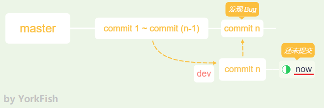
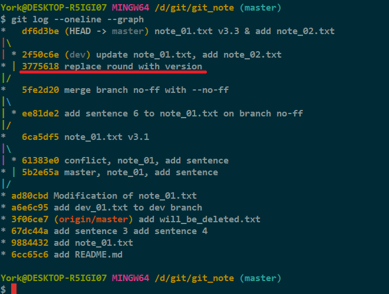
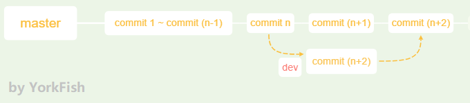
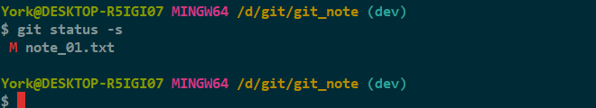

stash 之二
1. 情景描述

- 在 dev 分支工作时，得知 master 那边有个 bug
- master 那边的 bug 需要立即修复
- dev 这里却只做到一半
- 若在 dev 分支中没有提交就切到 master 分支，dev 的最新改动会被覆盖
2. 解决问题
2.1 准备
-
在 dev 分支下
add
-
对 note_02.txt 进行
add，然后commit
-
切到 master 分支并合并

-
查看历史记录

说明
- 第一步的图
- 因为 note_02.txt 是在 Git Bash 下，用 vim 写入数据的，所以有个格式提醒
- 我给 note_02.txt 转了格式后，才用
git status查看，所以 Git 有个 modified 提示
- 第四步的图
- 上图红线处的那个版本是上一篇改完 bug 的产物
2.2 创造条件
-
目前的情况

-
切到 dev 分支，更改 note_01.txt 并
add
说明
- 此时的情况可以类似当成
1. 情景描述
注意
- 这里，我将 note_01.txt 加入暂存区了
2.3 开始修复 Bug
-
git stash
-
这次使用
--no-ff与pop
3. 一个注意点
-
我在
2.2的第二步将 note_01.txt 加入暂存区了- 但现在的显示表明暂存区没有收入
- 不过工作区的还在
